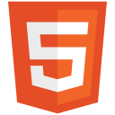
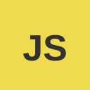
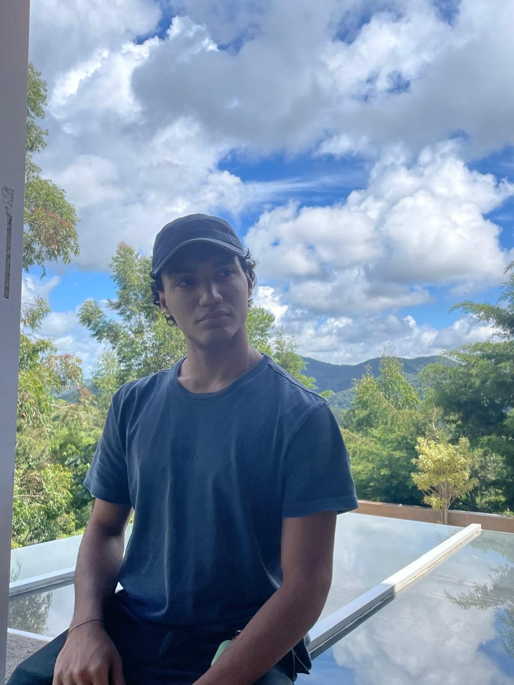
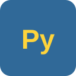
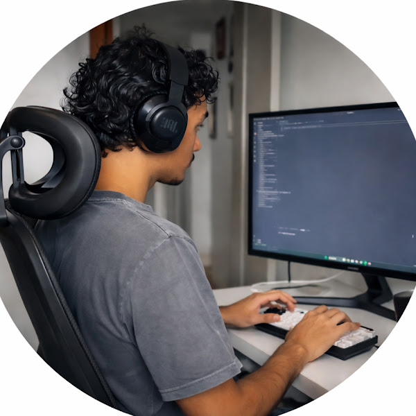

FMS Advocacia
Site institucional para escritório de advocacia, com apresentação das áreas de atuação e canais de contato.
sobre.md
Desenvolvedor em formação, construindo interfaces e soluções
através de código — do primeiro console.log
ao próximo deploy.
❯ whoami
❯
01 / sobre-mim.md

Comecei a programar por curiosidade — queria entender o que acontecia por trás das telas que usava todos os dias. Durante minha formação, descobri na tecnologia uma área capaz de unir criatividade, lógica e impacto, e essa curiosidade virou um objetivo profissional: tornar-me um desenvolvedor preparado para criar soluções inovadoras e contribuir positivamente para a sociedade.
Hoje tenho experiência com JavaScript, Python, HTML e CSS, além de tecnologias como React, React Native, Flutter e Node.js. Meu foco vai além de aprender a criar aplicações: quero entender como desenvolver sistemas eficientes, organizados e capazes de resolver problemas reais.
Além dos estudos técnicos, busco transformar aprendizado em prática — desenvolvendo projetos pessoais, registrando minha evolução e compartilhando essa jornada através da criação de conteúdo sobre programação. Acredito que ensinar e documentar o processo também faz parte do crescimento como profissional.
02 / objetivo-academico.md
Tenho como objetivo ingressar na PUC-Rio para aprofundar meus conhecimentos em Ciência da Computação, construir uma base acadêmica sólida e aproveitar as oportunidades de pesquisa e inovação da universidade. A bolsa da Fundação Behring representa uma oportunidade fundamental para que eu possa continuar essa formação em uma instituição de excelência — me dedicando ao máximo aos estudos, participando de projetos acadêmicos e contribuindo com a comunidade universitária através da minha dedicação e vontade de aprender.
Buscar conhecimento constantemente e desenvolver novas habilidades técnicas.
Transformar aprendizado em soluções concretas utilizando programação e tecnologia.
Documentar minha jornada e contribuir com outras pessoas que também querem entrar na área.
03 / competicoes.md
Participar de competições e desafios de tecnologia é uma forma de colocar meus conhecimentos em prática, testar meus limites e continuar evoluindo como desenvolvedor. A Olimpíada Brasileira de Informática (OBI) despertou meu interesse por programação competitiva por exigir raciocínio lógico, criatividade e persistência para encontrar soluções eficientes — habilidades essenciais para minha futura carreira em tecnologia.
Também tenho interesse em desafios que simulam problemas reais enfrentados por profissionais da área, além de desafios relacionados à Inteligência Artificial, uma das áreas mais importantes da tecnologia atualmente. Quero entender como modelos inteligentes funcionam e como desenvolver soluções com essa tecnologia de forma responsável.
Mais do que buscar resultados, meu objetivo é usar essas experiências para construir uma base sólida em computação e me preparar para contribuir com projetos inovadores no futuro.
04 / habilidades.json
05 / certificacoes.md
Curso PIUES — Pontifícia Universidade Católica do Rio de Janeiro, 26 a 30 de janeiro de 2026.
06 / projetos/


Site institucional para escritório de advocacia, com apresentação das áreas de atuação e canais de contato.
Site para petshop, apresentando serviços, produtos e informações de contato de forma simples e direta.
Recriação da plataforma TabNews, comunidade de conteúdo sobre tecnologia, praticando listagem e exibição de publicações.
Página interativa apresentando os planetas do sistema solar, explorando animações e posicionamento com CSS.
Página dedicada à literatura de cordel, unindo cultura popular brasileira e desenvolvimento front-end.
Projeto de encerramento do módulo de Front-End, reunindo layout responsivo, componentes e boas práticas de estrutura.

OBI 2020Resolução do simulado da Olimpíada Brasileira de Informática de 2020, como preparo para o desafio de admissão da PUC-Rio.
Resolução do simulado da Olimpíada Brasileira de Informática de 2021, como preparo para o desafio de admissão da PUC-Rio.
Resolução do simulado da Olimpíada Brasileira de Informática de 2022, como preparo para o desafio de admissão da PUC-Rio.
Resolução do simulado da Olimpíada Brasileira de Informática de 2023, como preparo para o desafio de admissão da PUC-Rio.
Resolução do simulado da Olimpíada Brasileira de Informática de 2024, como preparo para o desafio de admissão da PUC-Rio.
Resolução do simulado da Olimpíada Brasileira de Informática de 2025, como preparo para o desafio de admissão da PUC-Rio.
07 / canal.yml
Além do código, mantenho um canal no YouTube onde registro vlogs sobre a rotina na faculdade e os bastidores de construir uma carreira em programação — os altos, os baixos e o que vou aprendendo no caminho. Acredito que aprender programação não é só estudar linguagens e ferramentas, mas também enfrentar desafios, errar, buscar soluções e evoluir constantemente.
Inscreva-se no canal
@CaioCivitaDev
08 / contato.sh
Aberto a oportunidades, freelas e trocas com outros devs. Escolha o canal que preferir: